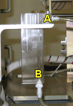
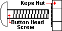
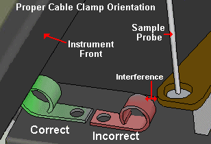
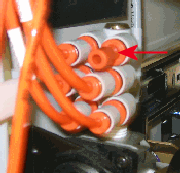
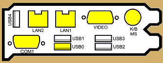
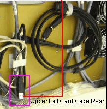
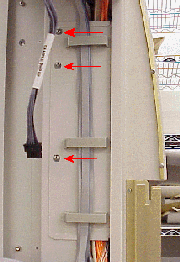

Installing Dual-Gantry Sample Pipettor When Upgrading (pre-installed cables)
This procedure describes how to install a dual-gantry sample pipettor when upgrading to an integrated configuration.
Perform this procedure when upgrading a DxI to an integrated configuration. This procedure is specific for upgrading instruments with these serial numbers:
The locking screw prevents the SPU from swinging outward from the instrument. It is not necessary to remove the screw because the SPU plate is slotted.
Remove the 3/16-in hex bolt located near the right end of the SPU cover.
Open the lower right access panel on the front of the instrument.
Pull the spring-loaded captive pin that holds the panel (located under the SPU) to the frame.
Grasping the SPU near the right end, swing the right end away from the instrument.
Warning: The SPU off-load area slides forward and rearward as the SPU is swung in and out. To prevent damage to the SPU or the off-load area, confirm that nothing obstructs the movement of the off-load area as the SPU is moved.
(For China and Canada Only.) On the front facing the edge of the Framus assembly, install the Chinese and French labels adjacent to the existing English label.
Note: The labels are in the DxI Installation Kit.
Remove the old towers.
Remove the two screws securing the wash tower to the mounting bracket.
Disconnect the upper supply tubing on the wash tower from the wash tower.
Caution: When disconnecting the upper supply tubing from the wash tower:
Do not remove the vacuum fitting or tubing from the sample pipettor wash tower.
The vacuum fitting is secured to the wash tower with silicone sealant and is torqued to 12 in-lb with a torque wrench.
The fitting is oversized for the tubing. If the tubing is removed from the fitting, it can be damaged.

Disconnect the clot filter from the vacuum tubing on the wash tower.
Disconnect the tubing from the in-line fitting that connects to the vacuum/pressure sensor PCB.
The in-line fitting is located next to the t-fitting.
Caution: Do not remove the tubing from the t-fitting. The t-fitting is oversized, making it difficult to remove and replace the tubing.
Remove the wash tower and connected tubing from the mounting bracket.
The wash tower is reinstalled on the front universal tower.
Remove the screws and washers that secure each tower to the base plate.
Four screws secure the front tower and two screws secure the rear tower to the base plate.
Remove the towers from the instrument.
Rotate the mounting brackets on the universal towers to the dual-gantry configuration.
Note:
The universal towers are designed to support the additional weight of the dual-gantry sample pipettor.
The universal towers are configured in manufacturing for the standard-gantry sample pipettor.
Remove the two screws that secure the gantry mounting brackets to the front and rear universal towers.
Rotate the brackets on the universal towers to the dual-gantry configuration, and secure the brackets.
Only one screw is used to secure the gantry mounting bracket to the rear universal tower in the dual-gantry configuration.
Install the universal towers.
Secure the front universal tower to the base plate of the instrument (four 1/4-20 x 5/8-in screws).
Note: A 3/16-inch ball-tipped hex wrench is included with the upgrade kit. This wrench has an extended shaft that makes it easier to secure the screws to the base plate. Washers are not required because the tower is not slotted.
Attach the wash tower to the front tower, route the tubing, and reconnect the tubing lines.
When the fluidics drawer is closed, verify that the tubing lines are not kinked.
Secure the rear universal tower to the base plate of the instrument (two 1/4-20 x 5/8-in screws).
Washers are not required because the tower is not slotted.
Close the SPU.
The SPU is hinged on the left side. The right side is released and can be swung out from the instrument to approximately 45 degrees.
Warning: The SPU off-load area slides forward and rearward as the SPU is swung in and out. To prevent damage to the SPU or the off-load area, confirm that nothing obstructs the movement of the off-load area as the SPU is moved.
Grasping the SPU near the right end, swing the right end toward the instrument.
Pull the spring-loaded captive pin to attach the panel (located under the SPU) to the frame.
Close the lower right access panel on the front of the instrument.
Insert the 3/16-in hex bolt.
Tighten the bolt that holds the SPU from swinging outward from the instrument (locking screw).
Close the upper left cover of the instrument.
Note: Initialize the instrument after opening and closing the SPU, because a switch is actuated when the SPU is opened.
Install the dual-gantry sample pipettor to the universal towers.
Caution: To avoid bending the spline shafts, do not use them to lift the dual-gantry sample pipettor. Bent spline shafts restrict movement and cause motion errors.
Caution: Verify that cables are not pinched between the towers and the gantry.
Caution: To avoid damaging the sample probe, use caution when installing the gantry.
Insert the dual-gantry sample pipettor into the instrument from the rear, and use the locating pins on the towers to attach the dual-gantry sample pipettor to the towers.
Secure the gantry to the towers using one of two options:
If the front tower has threaded holes, then use two 1/4-20 x 1-inch screws for each tower (four total).
If the front tower does not have threaded holes, use two 10-32 x 1.25-inch screws with keeps-nuts on the front tower and two 1/4-20 x 1-inch screws on the rear tower.

Note: A few of the front universal towers on DxI 800 instruments with serial numbers less than 601632 and DxI 600 instruments with serial numbers less than 900148 could have non-threaded mounting holes. All mounting hardware is in a bag in the shipping box with the dual-gantry sample pipettor.
Route the sample pipettor tubing.
Uncoil the sample pipettor tubing from the gantry.
Route the tubing through the tubing clamps located under the upper left card cage, below the bracket securing the bulk feeder.
Connect the tubing to the union fitting for the sample pipettor.
Verify that the tubing is not kinked and does not interfere with the movement of the sample pipettor.
Reconnect the cables to the sample pipettor interface PCB.
J1 - Ribbon Cable
J3 - Power Harness
Remove the cable-ties securing the dual-gantry pick-and-place and the sample pipettor.
Remove the paper warning tag attached to the spline shafts.
Move the sample pipettor and pick-and-place along the length of the gantry and verify that the motion is smooth and unrestricted.
For DxI 600 serial numbers <900026, verify the cable clamp is installed correctly. Change if needed.
Some DxI 600 serial numbers <900026 may have a cable clamp that is installed incorrectly. If this clamp is in the incorrect position the sample pipettor cannot move completely forward and interferes with the dual-gantry pick-and-place when the pick-and-place tries to remove vessels from the low-volume sample racks.

Install the pneumatics tubing.
Remove the lower right rear panel on the instrument.
Locate the six-port air manifold attached to the 20-psi regulator.
Remove the plug from the unused port on the manifold.
Attach the 1/4-in to 5/32-in reducer fitting to this port.
Attach one end of pneumatic tubing to the fitting.
Note: The fitting and tubing are in the tubing kit that is included in the DxI Upgrade Kit.

Route the tubing.
Route the tubing through the tubing clamps in the pneumatics area.
Route the tubing up through the hole in the instrument base plate.
Route the tubing through the clamps on the dual-gantry sample pipettor.
Attach the tubing to the pneumatics valve.
Replace the lower right rear panel.
Remove the sample pump from the instrument to access the CPU PCB to connect the cables.
Connect one end of the dual-gantry USB cable to the USB 0 connector on the CPU PCB. Connect the other end of the USB cable located behind the sample storage module to JR1 on the USB Encoder I/F PCB attached to the dual-gantry sample pipettor.
Caution: The dual-gantry USB cable must be plugged into the USB 0 port when software is loaded. If this port is not used, the USB drivers used to operate the motor encoders are not loaded. Without encoder function, the pick-and-place homes but otherwise does not move correctly.
Figure 272: Advantech CPU
Figure 273: Atom CPU

Figure 274: Rocky CPU

Connect the UCTA network cable to the LAN 2 connector on the CPU PCB (if not already installed).
Note: If the network port shown in the diagram already has a cable connected, then connect the cable to the second network port on the PCB.
Route the network cable behind the card cage, through the tubing clamps, and down the left side of the instrument behind the cover of the cable channel.
Note: It may be necessary to remove the cover to route the cable behind it. Replace the cover after the cable is routed.
Figure 275: Cable channel and cover

Continue routing the network cable along the base plate of the instrument and out the back at the far right end of the instrument. Connect the network cable to the DxC network hub.